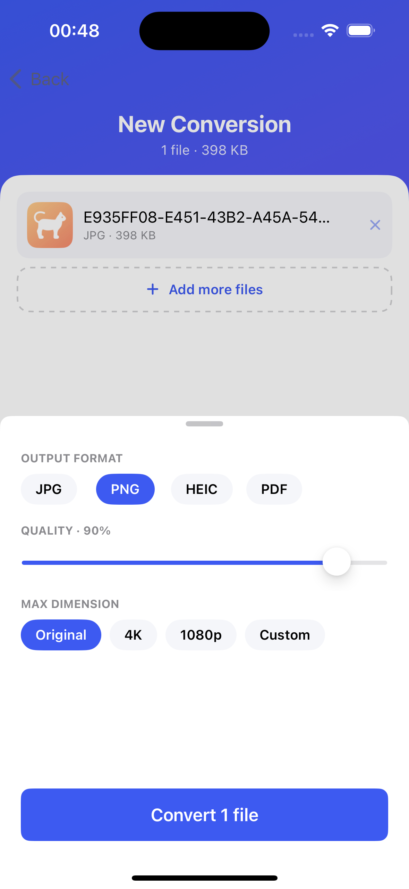
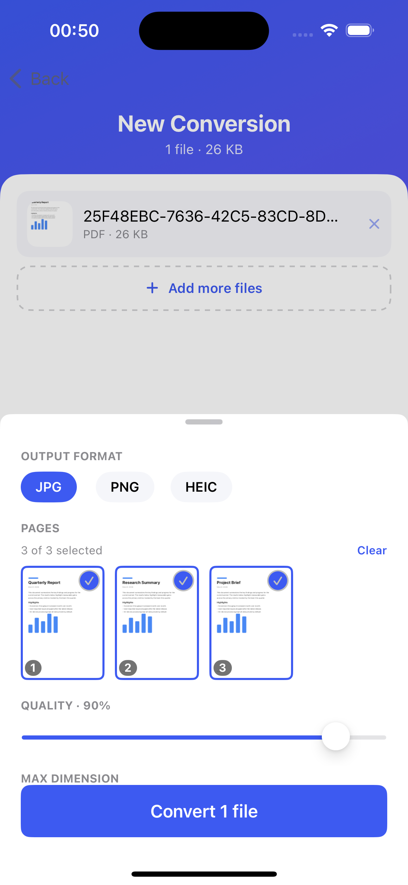
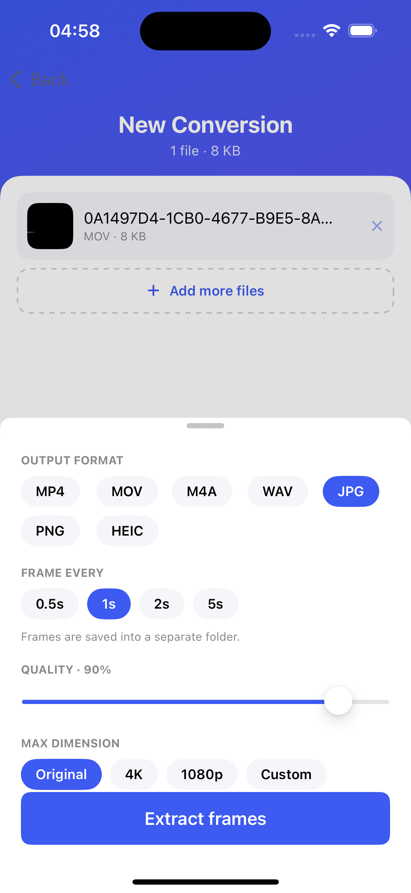
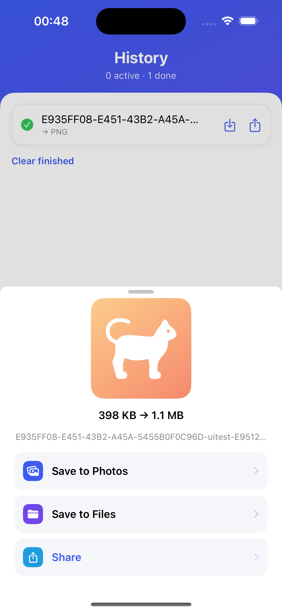

Convert photos, PDF, video & audio — on your device.




Need help? Email us and we’ll get back to you.
Fast Media Converter converts images, PDFs, videos, and audio on your device — JPG/PNG/HEIC, images ↔ PDF, PDF pages to images, MP4/MOV compression, audio extraction to M4A/WAV, and pulling frames out of a video into a folder. Everything runs locally; your files never leave your phone.
What’s free and what’s Pro?
Free covers everyday conversions — photos to JPG/PNG/HEIC and video compression /
audio extraction — 10 a day, no watermark. Pro unlocks PDF conversions (both
directions), video frame extraction, and unlimited use, with a single one-time
purchase (no subscription).
Can I turn a video into images?
Yes — choose an image format for a video and pick a frame interval (every 0.5s, 1s,
2s or 5s). The frames are saved into their own folder. (Pro)
Can I choose which PDF pages to convert?
Yes — pick exactly the pages you need from the visual page grid. (Pro)
Where do my converted files go?
Save results to Photos or Files, or share them. Use “Save all” to export a batch,
and video frames export as a whole folder.
I bought Pro on another device.
Tap “Restore Purchases” on the Pro screen — it’s tied to your Apple ID.
See our Privacy Policy. Short version: the app collects nothing and processes all files on-device.